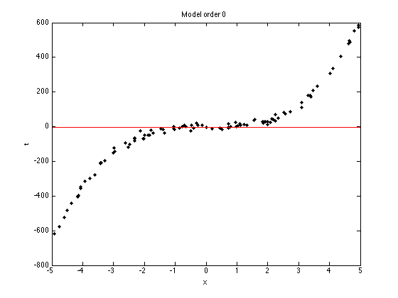
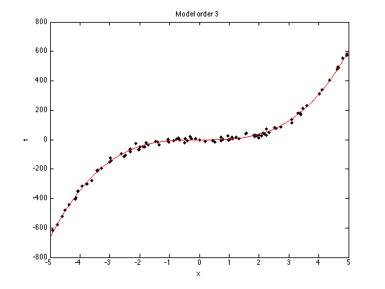
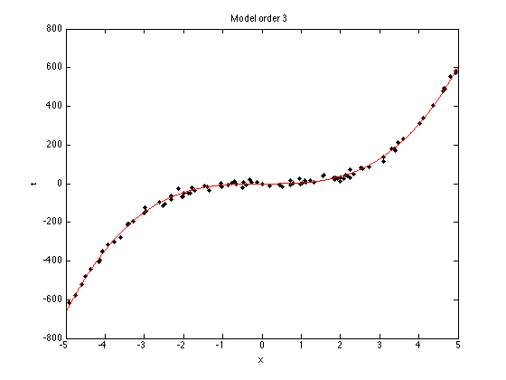
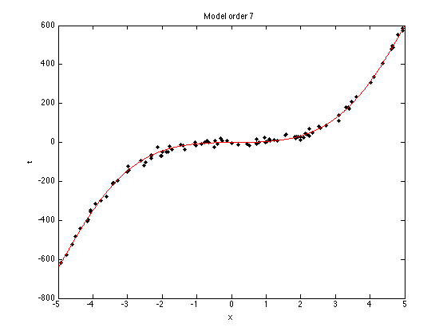
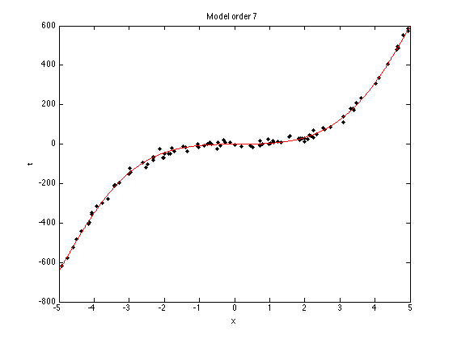
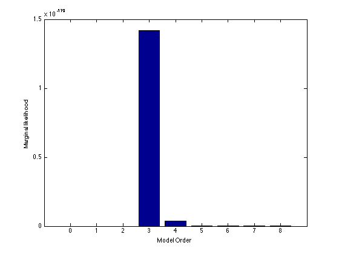

Contents
margpoly.m
From A First Course in Machine Learning, Chapter 2. Simon Rogers, 01/11/11 [simon.rogers@glasgow.ac.uk] Marginal likelihood for model selection
clear all;close all;
Generate the data
N = 100; x = sort(rand(N,1)*10-5); noise_var = 150; t = 5*x.^3 - x.^2 + x; % Try adding and removing terms from this function, or changing term % weights. e.g. % t = 0.0005*x.^3 - x.^2 + x; t = t + randn(size(x)).*sqrt(noise_var); % Plot the data plot(x,t,'k.','markersize',10); xlabel('x'); ylabel('t');

Fit models of various orders
orders = [0:8];
testx = [-5:0.01:5]';
X = [];
testX = [];
for i = 1:length(orders)
si0 = eye(orders(i)+1);
mu0 = repmat(0,orders(i)+1,1);
X = [X x.^orders(i)];
testX = [testX testx.^orders(i)];
siw = inv((1/noise_var)*X'*X + inv(si0));
muw = siw*((1/noise_var)*X'*t + inv(si0)*mu0);
% Plot the data and mean function
figure(1);hold off;
plot(x,t,'k.','markersize',10);
xlabel('x');
ylabel('t');
hold on
plot(testx,testX*muw,'r');
ti = sprintf('Model order %g',orders(i));
title(ti);
% Compute the marginal likelihood
margcov = noise_var*eye(N) + X*si0*X';
margmu = X*mu0;
D = length(margmu);
log_marg(i) = -(D/2)*log(2*pi) - 0.5*log(det(margcov));
log_marg(i) = log_marg(i) - 0.5*(t-margmu)'*inv(margcov)*(t-margmu);
 
 
 
 
 
end
Plot the marginal likelihoods
figure(1); hold off bar(orders,exp(log_marg)); xlabel('Model Order'); ylabel('Marginal likelihood');